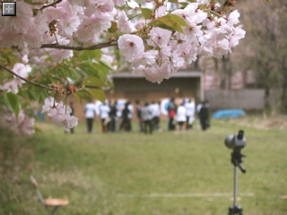
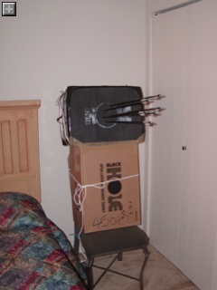
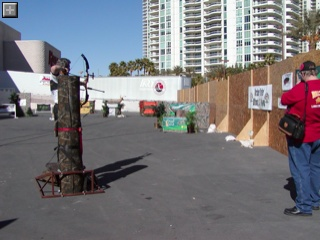
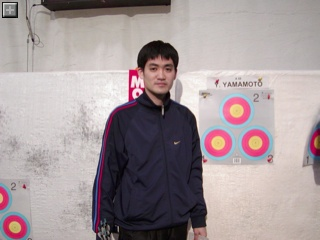
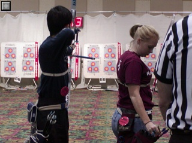

今日はインドアアーチェリー場を作ってみました。
ブルーの透明な壁に覆われたサワヤカなインドアアーチェリー場
ちゃんと蛍光灯もある。
的に近づいたところ
アウトドアとあわせて眺める
基本的なオブジェクトの作り方も慣れてきたので迷うことなくサクサクっと作れました。
絵心は全くありませんが、それっぽい見かけになってきたので嬉しいです。
しかし、的があるだけでは、「あるだけ」です。
まだなにもスクリプトが仕込まれていないのでアーチェリーを楽しめるわけではありません。
実際にアーチェリーをプレイできるようになるには相当時間がかかりそうですね。
まずは昼間は自動的に電気が消灯するスクリプト、とか、船橋アーチェリーレンジみたいにインドア的が自動的に近づいてくる仕組みとか作ってみようかと思います。
まぁ、見かけだけのアーチェリー場でイメージトレーニングしてもいいわけですが。
32mx32mの正方形の土地ですが、見かけは50mくらいあるように見えなくもありません。
ショートハーフがうてるよう、50m、30m的を設置することに。
さらに今日はシューティングラインとターゲットラインを引いてみたら結構射場っぽい雰囲気が出てきました。
そういえばこの土地、「PG」指定です。
セクシャルなコンテンツと共に「武器」の使用が禁止されてます。
アーチェリーは当然武器ですが、実際にアーチェリーがプレイできるような射場を作ってしまうのはまずいでしょうか？
「PG」エリアでも普通にライトサーベルとか握ってる人とかいますんで、射場内でしかうてないような仕組みをつくれば大丈夫かなぁ・・？
そういえばPGエリアでボーリング場とかもあります。「モノを飛ばす」という点では武器に近いものがありますんで、恐らく人に危害を加えなければいい気のでしょう。
では実際、「武器」の定義はどうなっているのかしらべてみました。
・Weapons in Second Life
このゲーム内で武器は人々をとても遠くに飛ばすことができます。
また、いくつかの武器は住民にダメージを与え、十分にダメージを与えれば彼らは死に至りホームへテレポートさせられます。
いくつかの武器は人々をログアウトさせることすらできます。
なるほど、武器って武器の形をしているとか何か飛ばすことができるとかではなく、実際にスクリプトで武器としての性質を帯びているものを指すみたいですね。
セカンドライフのスクリプト言語はまだ全く勉強していないのですが、恐らく人を飛ばすとかダメージを減らすといったメソッドが用意されているのでしょう。
逆にこれらの性質を持っていなければ PG エリア内でも安全にアーチェリー場が作れそうです。
でも人の土地に矢が飛んでいったら気分は良くないでしょうから人の良心にまかせずとも間違いが起きない仕組みを作り込んでやる必要がありそうです。
久しぶりにセカンドライブやってます。
スパイスボックスのキャンペーンで当選し、土地を無償で貸与して頂いています。
アーチェリー場を作ろうってことで、当選以来リアルアーチェリー場でパシャパシャ写真を撮ってテクスチャを集めていました。
しかし、実際のセカンドライフ内での建設は進んでおらず、「使っていないなら返してねー。他の人に貸したいから」とのメッセージを頂いてしまいました。
放置したままでごめんなさい！
というわけで急遽建設に取りかかっています。
建設現場はJapan Islandsというところ。
的紙のテクスチャは写真を貼り付けたら変な感じになったので OmniGraffle で作成してみました。
そのうちスクリプトを組んで実際にアーチェリーをプレイできるようにしたいです。
30mまでしかありませんが。
#実際の競技は30m〜最大90m
近所のアーチェリー場で管理人さん達が一生懸命育てている葡萄が綺麗に実っていました。
市販されている葡萄みたいな強烈な甘さはないですがちょっと酸っぱくて素朴な味わいです。
もちろん無農薬。
東京農工大学のアーチェリー場にて。
ここは毎年桜が素晴らしい。

誤って前日に設定した ISO1600 のまま撮影。
ややざらついた画質になってしまった。
{kind=link}
{kind=link}
近射用のカタマリ、Black-Hole がついに我が家に到着！
これで練習し放題！

今日は171本うちました。
貫通することもなく、抜きにくくもなく、良い感じ。
{kind=link}
サーカスサーカスでインターネットが使えればちゃんとその日のうちに書けたんだけど・・・・。
今日の試合は午後 1:00 から。
公開練習と、１日目の試合でぐったりなので朝はゆっくり寝坊してた。体鈍っております。
妻は早起きしてナショナルコーチの Lee Kishik のセッションを聞きにいってた。
なかなかためになって刺激されたようで、やる気をもてあましてた。次回は一緒に出場かな？
２日目は昨日と同じ的。同的の人も同じ。
まぁ、昨日より気持ちよくうてて、50点近くあがった。
しかし昨日の点がそもそも良くないので全く持ってショボい点数。

外でやってた3Dのアトラクション。空気圧かなんかで飛び出したり移動したりする
夜は急遽チケットを手配したPenn & Tellerのマジックショーを見た。
３年前に一度見たけれども大分忘れてた。っていうか７割方はネタが変わってたと思う。
トークネタは30%くらいしか理解できなかった気がする・・・。精進精進。
それなりに有名だと思う２人
ショーの後はもう夜遅かったけど、明日の試合開始時間を確認するためもう一度試合会場のリビエラホテルへ。明日は12:30らしい。
{kind=link}
今日の試合は午後 1:00 から。
公開練習と、１日目の試合でぐったりなので朝はゆっくり寝坊してた。体鈍っております。
妻は早起きしてナショナルコーチの Lee Kishik のセッションを聞きにいってた。
なかなかためになって刺激されたようで、やる気をもてあましてた。次回は一緒に出場かな？
２日目は昨日と同じ的。同的の人も同じ。
まぁ、昨日より気持ちよくうてて、50点近くあがった。
しかし昨日の点がそもそも良くないので全く持ってショボい点数。
外でやってた3Dのアトラクション。空気圧かなんかで飛び出したり移動したりする
夜は急遽チケットを手配したPenn & Tellerのマジックショーを見た。
３年前に一度見たけれども大分忘れてた。っていうか７割方はネタが変わってたと思う。
トークネタは30%くらいしか理解できなかった気がする・・・。精進精進。
それなりに有名だと思う２人
ショーの後はもう夜遅かったけど、明日の試合開始時間を確認するためもう一度試合会場のリビエラホテルへ。明日は12:30らしい。
今日は試合本番1日目。
朝7:30〜ということで6:30くらいに起きて眠い目をこすって会場へ。
張り出されている的番を確認して、Gene に言われた通り上側に的を張る。
同的は細身と太身の女子高生（？）とノボっとした大学生っぽいの。
ノボっとしたのは試射で立ちを間違えて初回一的三人立つハメになった。
全日ターゲットじゃないっつーの。

的紙を貼り終えたトコ。眠そう
妻も指摘していたけど同立ちだった子は名前が KUCHENBROD と、ドイツっぽい。
聞いてみれば祖父がドイツ人だとのこと。
でもドイツ語はしゃべれず、第二外国語で習っているけれども苦手。
見た目じゃわからんけど、そういうのアメリカにはゴロゴロしてるのかね？Geneも何代前かにドイツ人がいるとか言ってた。
ドイツ語が堪能な妻によると KUCHENBROD はケーキ-パンの意だそうで、我々の中では勝手にケーキパンちゃんというあだ名で呼んでいた。

ケーキパンと私
日本でいつもやってる試合とちょっと違う点をいくつか
・下の的をうつほうが常に先立ち
AB-CD->CD-ABじゃなくて、CD-AB->CD-AB・・って感じ。
・５エンドで上下的を入れ替え
つまり的紙を上に貼ったら試射を含めて７回連続後立ちで上をうつ。
的紙を貼り替えて、５回連続先立ちで下をうつ。
・スコアの修正はスコアラーができる
ケーキパンはなんと鉛筆でスコアを書いていた。
・点数のコールは英語で(当たり前！)
小計は 21 - twenty one、累計は 108 - one o five、230 - two tirty てな感じで読むみたい。流でスコアリングを担当するハメになった。
点数コールを聞き間違えることもなく、確認の読み上げの発音が悪くて聞き直されることなく思ったよりスムース。
結果の方はというと・・最近の調子通り、試合になるとタイミングがくずれまくりダメダメ。うーむ。
なんだかカッコイイショット by 妻
{kind=link}
{kind=link}
{kind=link}
試合会場はサーカスサーカスホテルからストリップをはさんだちょうど向かい側、リビエラホテルのコンベンションセンター。
エントリーはオンラインで済ませてあるので、受付で名前を言うとルールブックと細かい注意書きのある紙切れを山ほどもらった。
スケジュールにPractice $5 all dayとか書いてあるのでうっすら察していたけれどもやっぱり練習にはお金がかかるらしい。
練習会場の受付でお金を払うと的紙をくれるので、それを空いているマットに貼り付けて練習する仕組み。
17:30くらいだったけど会場はほぼ一杯。
隅の方にようやく空いているマットを見つけ練習開始♪
ほどなく、先ほどのおじさん(Gene Lueck という)がやってきた。
同的で練習しながら色々とコツを教えて貰った。
1. 人のタイミングは気にせず自分のペースでうて
(隣の人がうちおわるのを待ってからセットアップする自分を見て)
日本のインドア大会だと会場の都合から隣の人との距離がメチャメチャ近く、同時にセットアップするのはタブーな場合も。
確かにベガスシュートは大変会場が広いのでそんな心配はないかも。
2. 試合会場には早めについて、上側に的を貼れ
どうやら練習時とおなじく、試合でも自分で的を張るらしい。
で、前半後半でうつ的が上下入れ替わるのだけど、前半上をうって後半下をうつのが楽でしょうと。
なるほどなるほど。
Gene(左)と自分(中)
夕飯もGeneが一緒に食べようということでサーカスサーカスのバッフェへ行った。
メニューは普通だけど一人$10くらい。安い！
Gene の話を聞くと、なんとベガスシュートには初回大会から出場しているとのこと。
アーチェリーは1945年から始めていて、コンパウンドボウは1971年(コンパウンドボウが発明されたか、発売されたあたりらしい)からやっていると！！！
なんか大御所っぽいぞ。有名人なのかなぁ？？
シャツに "The 4th Axis" というナゾのロゴがプリントされていたので突っ込んだら、「コレは俺の発明品だ！」ととくとくと説明を受けた。
フィールドで、打ち上げ、打ち下ろし時にバブルがずれて左右に外すのを防ぐためにサイトエクステンションを傾けるための部品らしい。
効果のほどはわからないけど、バブルのないリカーブボウにはとりあえず関係なさそう。
さて、明日は朝7:30から試合だ！！！
早く寝ないと！
さて無事１年ぶりのラスベガスに到着。
空港からはシャトルバスを利用してみた。２人で$10とお手頃。
行き先が試合が開催されるリビエラホテルと、その隣で今回泊まるサーカスサーカスだったので乗客はアーチャーばっか。
カジュアルに話しかけるアメリカ人はどこから来たんだとかどこに泊まるんだとかだれでもかれでもしゃべってる。
われわれに話しかけてきたオッサン(推定63歳)はオレゴン(オーガン、オーガンって聞こえた)から来たらしい。
なんだ君らはベガスシュート初めてか！？とか言って名刺をくれて携帯電話番号を教えてくれた。
なんかわからないことあったらいつでもかけてこい、と。
去年遊びに来たときにサラっと見学したものの、試合に出場となると右も左もわからないのでちょっと不安だったとこ。これは心強い！
さて、チェックインも無難に済ませたので公開練習会場へいきましょか。
ベガスシュート出場のため一路ラスベガスへ。
空港まではいつものBARTで。
もうBARTは慣れてるので何の問題もなく空港へ到着・・・するはずがなんかトラブルが発生したとかで途中で降ろされてしまった。
降りろ、との車内のアナウンスが聞き取れたのは幸いだけども、駅構内のアナウンスはいまいち良く聞こえない。
「空港行きは別のホームに到着しますよ」、とか言ってたらどうしよーとかやや不安になりながら係員に聞いてみたところ
「テクニカルプロブレムが発生したのよ。もうそろそろ別のが来るので、同じホームで待っていればOk。」とのこと。
余裕をもって出発したから良いものの、15〜20分くらい余分に時間かかってしまった。
日本だったら5分も遅れたら結構な異常事態だけど、地元の方々は慣れたもので、とくにザワつくこともなく平気で待ってました。ビバっ 日本！
空港に着いてから飛行機に乗るのは特に問題もなくスムースに。
相変わらずセキュリティチェックは厳しい。
飛行機からのキレイな眺め
{kind=link}
今日もゴールデンゲートパークで練習。
混み具合はぼちぼち。
ベガスシュートに向け１８ｍ（と思われる距離）を72本。
当たりはぼちぼち。
めちゃめちゃ当たっているように見えるけど実は80cm(30/50m用)的を18mでうってる